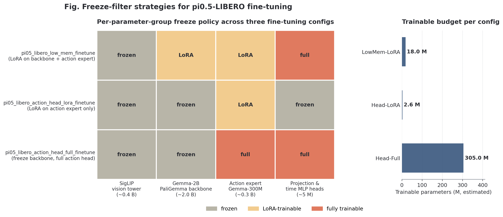
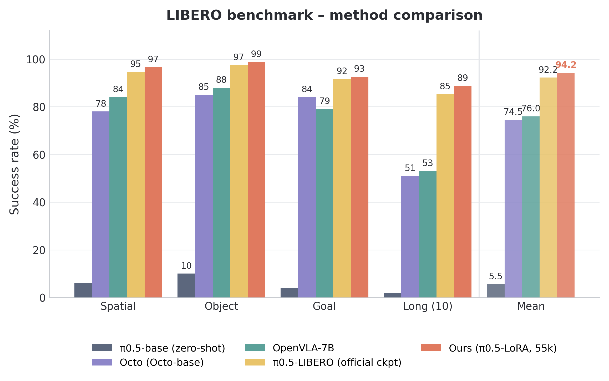
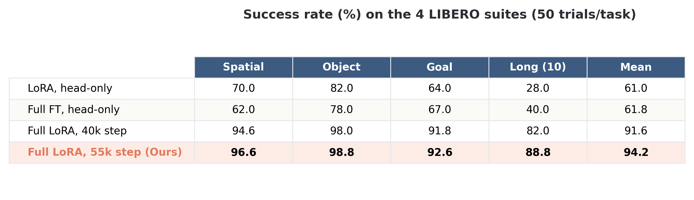
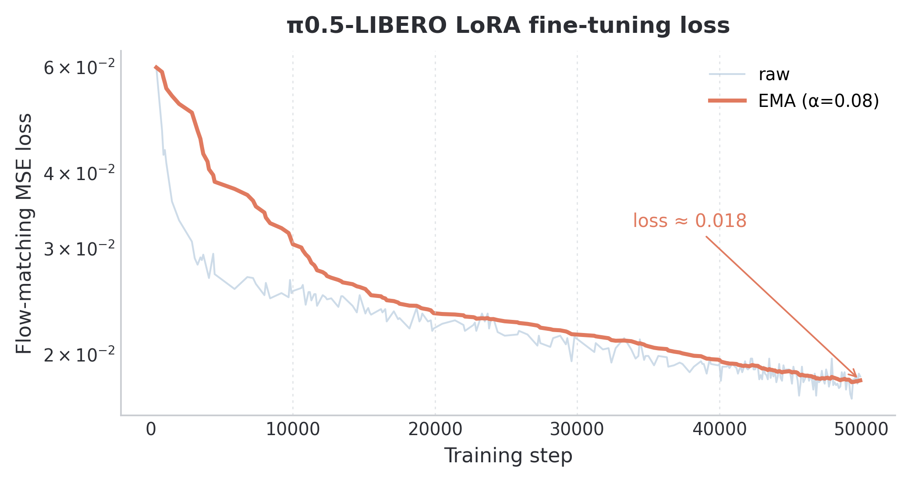
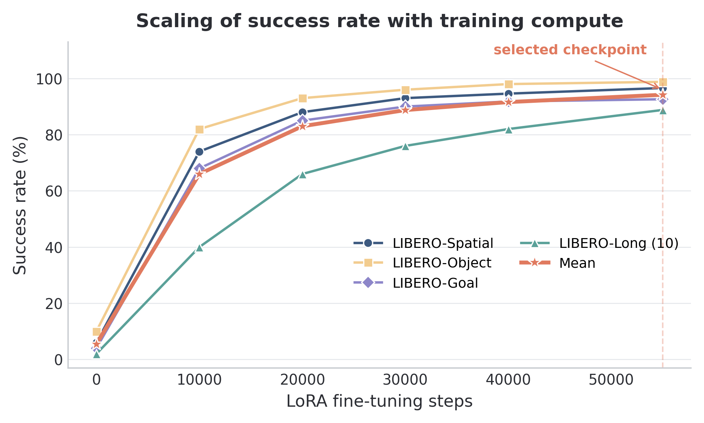

pi0.5 VLA Fine-Tuning on LIBERO Benchmark
Yueyi Chen · Embodied AI / VLA Fine-Tuning Project · 2026
Single-GPU LoRA adaptation of Physical Intelligence's pi0.5 VLA model with reproducible LIBERO evaluation.
Overview
This project migrates Physical Intelligence's pi0.5 Vision-Language-Action model to the LIBERO simulation benchmark under a 24 GB single-GPU budget. I used LoRA fine-tuning from pi05_base, built a freeze-filter strategy matrix, and completed a reproducible evaluation path across the four LIBERO suites.
- Algorithm: designed three freeze-filter strategies covering about 2.6M, 18M, and 305M trainable parameters.
- Training: ran full-model LoRA on a single RTX 4090 with batch 16, peak LR 5e-5, 10k warmup, and no EMA shadow copy.
- Evaluation: served checkpoints through WebSocket and evaluated 4 suites x 10 tasks x 50 trials, with checkpoint-aware logs and videos.
- Result: selected the 55k-step LoRA checkpoint, reaching 96.6 / 98.8 / 92.6 / 88.8 success across Spatial, Object, Goal, and Long-10.
Model and Fine-Tuning Design
The pi0.5 policy keeps the visual-language backbone and adapts the continuous action path: a PaliGemma-style visual-language stack feeds a Gemma-300M Action Expert and a Flow Matching action head. The LIBERO adaptation focuses on LoRA placement, trainable-parameter scope, and action/state normalization.


def _freeze_filter_train_action_expert_lora_only():
action_expert_lora = nnx.All(
nnx_utils.PathRegex(".*llm.*_1.*"),
nnx_utils.PathRegex(".*lora.*"),
)
return nnx.All(nnx.Param, nnx.Not(action_expert_lora))The key implementation detail is that freeze_filter marks parameters to freeze, so the action-expert LoRA intersection must be negated. This reduced an accidental large trainable set to the intended action-expert adapter parameters.
LIBERO Results
The final checkpoint is Full LoRA at 55k steps. It improves the official pi0.5 LIBERO baseline by 2.0 percentage points and the OpenVLA-7B baseline by 18.2 percentage points, with the largest practical gain on the long-horizon suite.
| Suite | Spatial | Object | Goal | Long-10 | Mean |
|---|---|---|---|---|---|
| Ours, Full LoRA 55k | 96.6% | 98.8% | 92.6% | 88.8% | 94.2% |


Training Dynamics and Checkpoint Choice
The Flow Matching MSE drops quickly in the first 10k steps and stabilizes near 0.018 by 50k steps. The scaling curve shows that most suites converge by 20k-30k, while Long-10 continues improving until the 55k checkpoint.


Engineering and Reproducibility
The project was built as a reproducible benchmark pipeline, not just a one-off run. The evaluation scripts serve one checkpoint, loop all four LIBERO suites, preserve checkpoint metadata, and archive logs/videos under timestamped directories.
24 GB Training Budget
Batch 16, LoRA adapters, disabled EMA, and XLA memory fraction tuning make pi0.5 adaptation runnable on a single RTX 4090.
Freeze-Filter Audit
Regular-expression filters separate backbone, action expert, LoRA adapters, and action head for controlled ablation.
Serve/Eval Metadata
WebSocket metadata carries policy config and checkpoint path so client-side logs and rollout videos are checkpoint-aware.
One-Run Archiving
A shared run id groups Spatial, Object, Goal, and Long-10 logs, making 2000-episode evaluation auditable.
Debug Cases
LoRA Leakage
The default config left too many backbone parameters trainable when only the action expert used LoRA; a custom filter isolated action-expert adapters.
OOM on Full Fine-Tuning
Full-parameter pi0.5 fine-tuning was infeasible on 24 GB, so the run was redesigned around low-rank adapters and smaller batches.
Missing norm_stats
The base checkpoint lacked LIBERO normalization statistics; reusing official LIBERO assets made zero-shot and fine-tuned evaluation comparable.
Overwritten Videos
Flat video directories caused rollout collisions; checkpoint and timestamp based paths fixed multi-suite evaluation tracking.
Interview-Ready Technical Points
VLA Adaptation
Explain how visual-language representations, action expert parameters, and continuous Flow Matching action prediction interact.
Ablation Logic
The 2.6M -> 18M -> 305M matrix turns memory constraints into a controlled experimental variable.
Checkpoint Selection
Use suite-level scaling curves to justify 55k steps rather than selecting only by final loss.
Reproducible Evaluation
A benchmark claim is credible only when checkpoint, suite, trial count, logs, and videos can be traced together.